A few months ago, Facebook Research released a model they named the Segment Anything Model (or SAM for short) for image segmentation, either taking a textual prompt and segmenting areas related to the prompt, or autmatically segmenting every discrete contiguous body of pixels.
It would be pretty neat to be able to engineer features like “trees per block”, “cars per street”, etc. To attempt that, I’ll need very high resolution imagery. Fortunately, the NOAA freely provides such image data. They don’t offer an image dataset that’s limited just to Chicago. I could download all of the image tiles from their latest Illinois release, but each of these images is gigantic, so I’ll have to figure out a way to find the URLs to just the image tiles I want.
Imports, Path definitions, and defining basic functions
from collections import Counterimport datetime as dtfrom pathlib import Pathfrom typing import List, Tuplefrom urllib.request import urlretrieveimport geopandas as gpdimport matplotlib.pyplot as pltimport numpy as npimport pandas as pdfrom pyproj import CRS, Transformerimport rasteriofrom rasterio.plot import showimport requestsPROJECT_DIR = Path(".").resolve()PROJECT_DATA_DIR = PROJECT_DIR.joinpath("data")PROJECT_DATA_DIR.mkdir(exist_ok=True)output_dir = PROJECT_DATA_DIR.joinpath("IL_NAIP_2021_9599")output_dir.mkdir(exist_ok=True)def convert_image_bounds_to_4326(image_crs: rasterio.crs.CRS, image_bounds: rasterio.coords.BoundingBox) -> Tuple: transformer = Transformer.from_crs(CRS(image_crs), CRS("epsg:4326")) left, top = transformer.transform(image_bounds.left, image_bounds.top) right, bottom = transformer.transform(image_bounds.right, image_bounds.bottom)print(f"Lat, Lon of the upper left corner: {left, top}")print(f"Lat, Lon of the bottom right corner: {right, bottom}")return (left, bottom, right, top)def download_img_file(img_urls: List[str], output_dir: Path = output_dir) ->None:for img_url in img_urls: file_name = img_url.split("/")[-1] file_path = output_dir.joinpath(file_name)ifnot file_path.is_file():print(f"File {file_name} doesn't exist; downloading now") urlretrieve(img_url, file_path)else:print(f"File {file_name} already downloaded. Skipping redownload.")
Examining NOAA’s data file list for the 2021-Illinois-4band-imagery dataset
il_2021_img_urls_url ="https://coastalimagery.blob.core.windows.net/digitalcoast/IL_NAIP_2021_9599/urllist_2021_4BandImagery_Illinois_m9599.txt"resp = requests.get(il_2021_img_urls_url)if resp.status_code ==200: il_2021_img_urls = resp.text.split("\n")print(f'.tif file urls: {len([x for x in il_2021_img_urls if x.endswith(".tif")])}')print(f"Total file urls: {len(il_2021_img_urls)}")file_extension_counts = Counter([x.split(".")[-1] for x in il_2021_img_urls])sorted_counts =sorted(file_extension_counts.items(), key=lambda ext: ext[1], reverse=True)print("Counts of URLs by file extension (or content following a period)")for file_ext, url_count in sorted_counts:print(f" - File extension: {file_ext: >22}, URL count: {url_count:>4}")
print("Non .tif or .xml URLs:")non_tif_or_xml_file_urls = [el for el in il_2021_img_urls ifall(not el.endswith(ext) for ext in [".tif", ".xml"])]for url in non_tif_or_xml_file_urls:print(f" - '{url}'")
Non .tif or .xml URLs:
- 'https://coastalimagery.blob.core.windows.net/digitalcoast/IL_NAIP_2021_9599/il_naip_2021_15.vrt'
- 'https://coastalimagery.blob.core.windows.net/digitalcoast/IL_NAIP_2021_9599/il_naip_2021_16.vrt'
- 'https://coastalimagery.blob.core.windows.net/digitalcoast/IL_NAIP_2021_9599/tile_index_IL_NAIP_2021_9599.zip'
- 'https://www.fisheries.noaa.gov/inport/item/68085'
- ''
.vrt files are Virtual Format files used by GDAL (the Geospatial Data Abstraction Library). I haven’t looked at one before, and this full Illinois aerial imagery dataset is ~75GB, so let’s take a look and see if we can’t determine some pattern to the .tif filenaming that would enable me to avoid a massive download. And if the .vrt files aren’t useful, I guess I can explore those … 4149 .xml files for meaning.
Downloading a few .tif image files
dl_urls = [img_url for img_url in il_2021_img_urls if img_url.endswith(".tif")][0:3]dl_file_names = [url.split("/")[-1] for url in dl_urls]download_img_file(img_urls=dl_urls)
Examining the size and names of those downloaded .tif files
!ls -lshtr {output_dir} | head -n 6
total 31G
1.6M -rw-rw-r-- 1 matt matt 1.6M Jul 1 20:31 il_naip_2021_15.vrt
5.1M -rw-rw-r-- 1 matt matt 5.1M Jul 1 20:31 il_naip_2021_16.vrt
454M -rw-rw-r-- 1 matt matt 454M Jul 1 20:31 m_3608906_ne_16_060_20210622.tif
431M -rw-rw-r-- 1 matt matt 431M Jul 1 20:31 m_3608907_ne_16_060_20210617.tif
422M -rw-rw-r-- 1 matt matt 422M Jul 1 20:31 m_3608907_nw_16_060_20210617.tif
ls: write error: Broken pipe
Oof.mp3, ~450MB per .tif (based on looking at the first 3), and there are 4131 .tif files. I guess before I try to figure out the naming structure, I should see if the image data is adequate to resolve buildings.
Question 1: Is the image resolution fine enough that we can resolve buildings?
Examining assorted metadata in one of these .tif image files
File name: m_3608907_nw_16_060_20210617.tif
Transforms: | 0.60, 0.00, 299327.40|
| 0.00,-0.60, 4097538.60|
| 0.00, 0.00, 1.00|
CRS: EPSG:26916
Resolution: (0.6, 0.6)
units: metre
bounds: BoundingBox(left=299327.4, bottom=4089928.2, right=305696.4, top=4097538.6)
indexes: (1, 2, 3, 4)
# of bands: 4
Shape of imagery array: (4, 12684, 10615)
Lat, Lon of the upper left corner: (37.002598910956365, -89.25526907292884)
Lat, Lon of the bottom right corner: (36.93538410568418, -89.18177942773526)
From the above printout, we see:
the rasters in this dataset use projected coordinate reference system (CRS) EPSG 26916,
that projected CRS uses units of meters,
one pixel represents a 0.6m x 0.6m area (i.e. the resolution is 0.6m x 0.6m), and
the bands variable contains four stacked image arrays that are 12684 pixels by 10615 pixels
So each image should show a ~7.5 km by ~6.5 km area and have more than enough resolution to distinguish buildings from surrounding easments and infrastructure.
Showing the .tif image
plt.figure(figsize=(10,10))_ = show(bands)
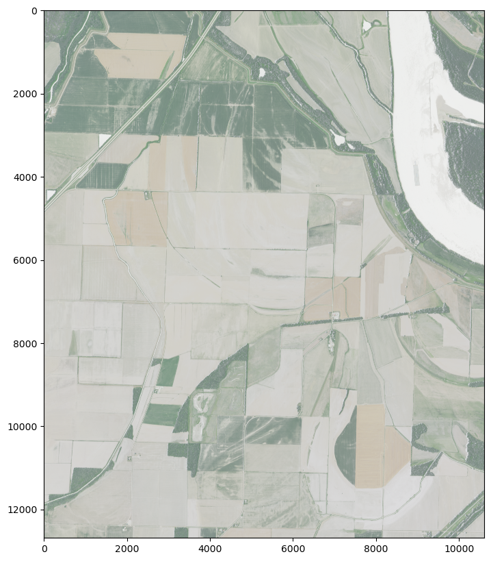
That image is pretty faded. Let’s look at the color-interpretation metadata and make prettier maps.
Examining the color-interpretation metadata in the .tif image
with rasterio.open(file_path) as src:print(f"Color interpretation for bands:\n{src.colorinterp}")
Color interpretation for bands:
(<ColorInterp.red: 3>, <ColorInterp.green: 4>, <ColorInterp.blue: 5>, <ColorInterp.undefined: 0>)
Ok, so the 4 bands represent [red, green, blue, non-color-data]. Let’s account for that.
Developing a display function with proper color-interpretation
file_path=file_pathfig_width =10fig, ax = plt.subplots(figsize=(fig_width, fig_width))with rasterio.open(file_path) as src: r = src.read(1) g = src.read(2) b = src.read(3) rgb = np.stack((r, g, b)) show(rgb, ax=ax)
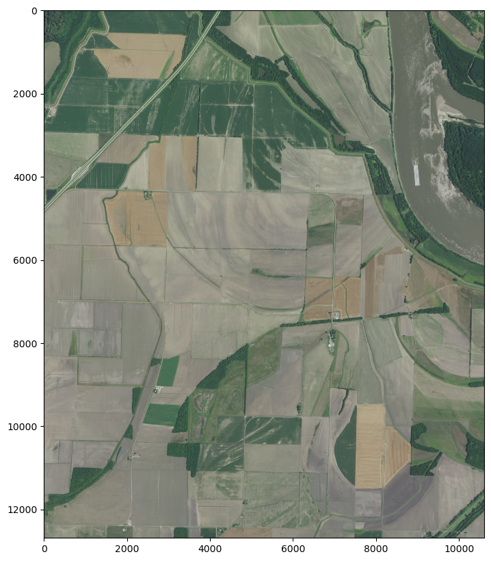
We saw above that a pixel corresponds to about 0.6m of linear distance, so we should definately be able to see buildings, but many human-scale things (like cars) may only a few pixels wide. Let’s blow up an image and really get a sense for the max resolution.
Zooming in on the north-south cluster of buildings
file_path=file_pathfig_width =10fig, ax = plt.subplots(figsize=(fig_width, fig_width))with rasterio.open(file_path) as src: window = rasterio.windows.Window(col_off=5000, row_off=6000, width=4000, height=4000) r = src.read(1, window=window) g = src.read(2, window=window) b = src.read(3, window=window) rgb = np.stack((r, g, b)) show(rgb, ax=ax)
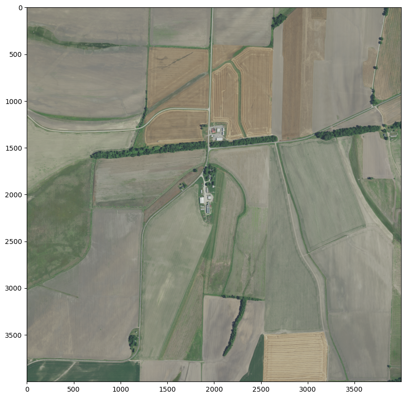
Zooming in much tighter on the north-south cluster of buildings
file_path=file_pathfig_width =10fig, ax = plt.subplots(figsize=(fig_width, fig_width))with rasterio.open(file_path) as src: window = rasterio.windows.Window(col_off=6500, row_off=7600, width=750, height=750) r = src.read(1, window=window) g = src.read(2, window=window) b = src.read(3, window=window) rgb = np.stack((r, g, b)) show(rgb, ax=ax)
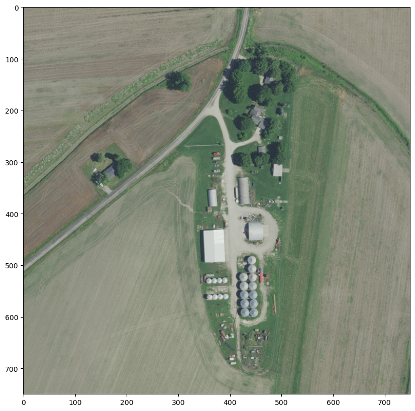
Zooming in to the extent of much tighter on the north-south cluster of buildings
file_path=file_pathfig_width =10fig, ax = plt.subplots(figsize=(fig_width, fig_width))with rasterio.open(file_path) as src: window = rasterio.windows.Window(col_off=6800, row_off=8000, width=300, height=300) r = src.read(1, window=window) g = src.read(2, window=window) b = src.read(3, window=window) rgb = np.stack((r, g, b)) show(rgb, ax=ax)
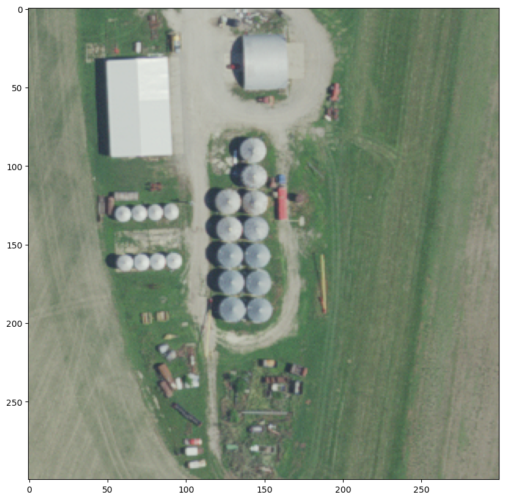
Answer 1: Yes, we can easily resolve small buildings
Cross-referencing with Google maps, we see that cars (like the red one in the shadow of the structure top-center in the above image) are barely discernable, but we can clearly make out buildings and trees.
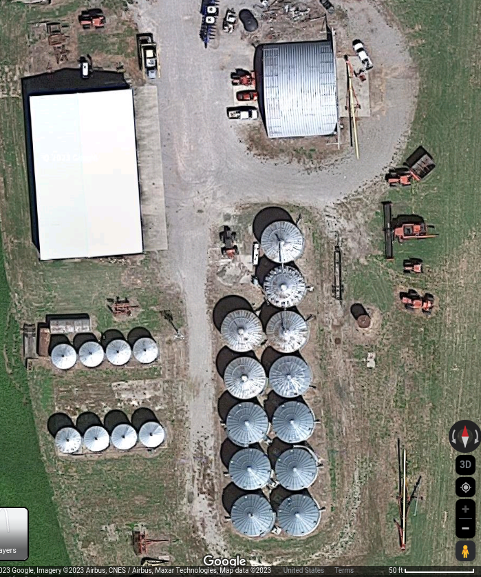
Encapsulating logic for downloading, extracting, and displaying .tifs
def download_tif_and_extract_bands(dl_filename: str, full_url_list: List = il_2021_img_urls, output_dir: Path = output_dir) -> np.ndarray: filename_subset = [el for el in full_url_list if el.endswith(dl_filename)] download_img_file(output_dir=output_dir, img_urls=filename_subset) file_path = output_dir.joinpath(dl_filename)with rasterio.open(file_path) as src: orig_crs = src.crs orig_bounds = src.bounds bands = src.read()print(f"File name: {file_path.name}")print(f"bounds: {orig_bounds}")print(f"Shape of imagery array: {bands.shape}") _ = convert_image_bounds_to_4326(image_crs=orig_crs, image_bounds=orig_bounds)return bandsdef plot_raster_image(file_path: Path, fig_width: int=10) ->None: fig, ax = plt.subplots(figsize=(fig_width, fig_width))with rasterio.open(file_path) as src: r = src.read(1) g = src.read(2) b = src.read(3) rgb = np.stack((r, g, b)) show(rgb, ax=ax)
Now that we know that the data can support the research task, let’s try to find images relevant to the research goal (namely, let’s find images of Chicago). These .tif files are gigantic, so let’s explore the metadata for order we can exploit to guide us. From the counts of file-extentions above, ~99.9% of the URLs in this dataset’s manifest were either .tif or .xml files, and there were a few other URLs, two for .vrt files and one .zip file.
Question 2: What does .vrt file data look like, and can I use it to determine the images covering Chicago
Examining the first ~20 lines in one of the .vrt files
withopen(output_dir.joinpath("il_naip_2021_15.vrt")) as f: vrt_lines = f.readlines()print("".join(vrt_lines[0:20]))
That looks like XML, which is very structured. After the opening VRTDataset tag, we see tags <SRS> (with CRS, projection, unit, orientation, etc metadata for the image data), <GEOTRANSFORM> (presumably providing the affine transformation matrix to transform from some reference), and then the start tag of a <VRTRasterBand> set (presumably for the band describing the red pixel mask values) of <SimpleSource> tags.
Let’s try parsing those <SimpleSource> elements to an easier-to-search data structure, the DataFrame.
Code to extract and structure data from these .vrt files
File m_4208925_sw_16_060_20210918.tif already downloaded. Skipping redownload.
File name: m_4208925_sw_16_060_20210918.tif
bounds: BoundingBox(left=253192.2, bottom=4709173.8, right=259211.40000000002, top=4716951.6)
Shape of imagery array: (4, 12963, 10032)
Lat, Lon of the upper left corner: (42.56552458440836, -90.00678751628385)
Lat, Lon of the bottom right corner: (42.49747091858195, -89.93027728345706)
Chicago is roughly bounded by (42.05, -87.95) to (41.65, -87.55), so filtering to the minimum y-offset in the vrt_16 file gets us pretty close, but from inspection, that level of ruralness is pretty far from Chicago.
Varying offsets to find images bounding the corners of Chicago
File m_4108701_nw_16_060_20210908.tif already downloaded. Skipping redownload.
File name: m_4108701_nw_16_060_20210908.tif
bounds: BoundingBox(left=416802.0, bottom=4643016.600000001, right=422700.0, top=4650559.2)
Shape of imagery array: (4, 12571, 9830)
Lat, Lon of the upper left corner: (42.00265573776309, -88.00462897145327)
Lat, Lon of the bottom right corner: (41.93533185561142, -87.93242799924842)
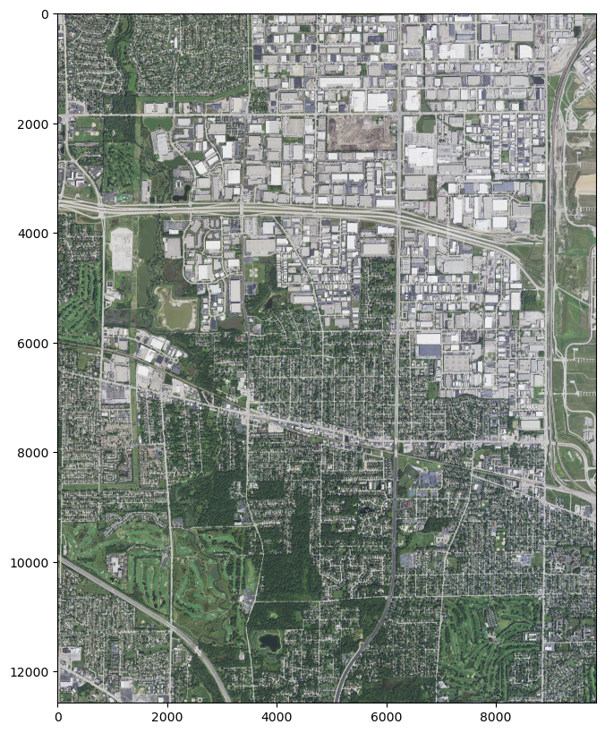
Now that we have a few (dst_x_off, dst_y_off) + (longitude, latitude) pairs, let’s do a little back-of-the-envelope math to figure out how 1 unit of dst_x_off or dst_y_off corresponds to longitude or latitude respectively.
From middle school algebra, we know that (for linear relationships) slope is given by rise over run.
\[ m = \frac{\Delta y }{\Delta x} = \frac{y_2 - y_1}{x_2 - x_1} \]
Here, rise is the change in latitude, run is the change in longitude. As we have two images with two sets of latitude and longitude pairs, we can calculate the slope. And as we know the latitude and longitude of Chicago, we can use that slope and one of our known (lat, long) pairs to estimate the approximate dst_x_off and dst_y_off values for corners bounding Chicago.
dst_x_off: 29303, dst_y_off: 0
Lat, Lon of the upper left corner: (42.56552458440836, -90.00678751628385)
Lat, Lon of the bottom right corner: (42.49747091858195, -89.93027728345706)
dst_x_off: 301986, dst_y_off: 110654
Lat, Lon of the upper left corner: (42.00265573776309, -88.00462897145327)
Lat, Lon of the bottom right corner: (41.93533185561142, -87.93242799924842)
Back of the envelope math to estimate offsets for Chicago’s bounding box
dst_x_off_1 =301986dst_y_off_1 =110654ll_tl_1 = (42.00265573776309, -88.00462897145327)ll_lb_1 = (41.93533185561142, -87.93242799924842)lat_1 = (ll_tl_1[0] + ll_lb_1[0]) /2lon_1 = (ll_tl_1[1] + ll_lb_1[1]) /2dst_x_off_2 =29303dst_y_off_2 =0ll_tl_2 = (42.56552458440836, -90.00678751628385)ll_lb_2 = (42.49747091858195, -89.93027728345706)lat_2 = (ll_tl_2[0] + ll_lb_2[0]) /2lon_2 = (ll_tl_2[1] + ll_lb_2[1]) /2delta_x_off = dst_x_off_2 - dst_x_off_1delta_y_off = dst_y_off_2 - dst_y_off_1delta_lat = lat_2 - lat_1delta_lon = lon_2 - lon_1x_slope = delta_lon / delta_x_offy_slope = delta_lat / delta_y_offprint(f"Change in longitude per 1 unit of dst_x_off: {x_slope}")print(f"Change in latitude per 1 unit of dst_y_off: {y_slope}")for x_offset inrange(250000, 400000, 10000):print(f"longitude w dst_x_off {x_offset}: {lon_2 + x_slope * x_offset}")print("------------------------------------------------ ")for y_offset inrange(100000, 200000, 10000):print(f"latitude w dst_y_off {y_offset}: {lat_2 + y_slope * y_offset}")
Change in longitude per 1 unit of dst_x_off: 7.334538326626925e-06
Change in latitude per 1 unit of dst_y_off: -5.083448902054101e-06
longitude w dst_x_off 250000: -88.13489781821373
longitude w dst_x_off 260000: -88.06155243494746
longitude w dst_x_off 270000: -87.98820705168119
longitude w dst_x_off 280000: -87.91486166841491
longitude w dst_x_off 290000: -87.84151628514864
longitude w dst_x_off 300000: -87.76817090188237
longitude w dst_x_off 310000: -87.69482551861611
longitude w dst_x_off 320000: -87.62148013534984
longitude w dst_x_off 330000: -87.54813475208357
longitude w dst_x_off 340000: -87.4747893688173
longitude w dst_x_off 350000: -87.40144398555103
longitude w dst_x_off 360000: -87.32809860228477
longitude w dst_x_off 370000: -87.2547532190185
longitude w dst_x_off 380000: -87.18140783575222
longitude w dst_x_off 390000: -87.10806245248595
------------------------------------------------
latitude w dst_y_off 100000: 42.023152861289745
latitude w dst_y_off 110000: 41.9723183722692
latitude w dst_y_off 120000: 41.92148388324866
latitude w dst_y_off 130000: 41.87064939422812
latitude w dst_y_off 140000: 41.81981490520758
latitude w dst_y_off 150000: 41.768980416187034
latitude w dst_y_off 160000: 41.718145927166496
latitude w dst_y_off 170000: 41.66731143814596
latitude w dst_y_off 180000: 41.61647694912541
latitude w dst_y_off 190000: 41.565642460104876
Using our estimates to try to find the offsets for the northwest corner of Chicago
File m_4108807_ne_16_060_20210928.tif already downloaded. Skipping redownload.
File name: m_4108807_ne_16_060_20210928.tif
bounds: BoundingBox(left=401299.8, bottom=4643203.8, right=407130.0, top=4650757.2)
Shape of imagery array: (4, 12589, 9717)
Lat, Lon of the upper left corner: (42.00264796207355, -88.19181782437538)
Lat, Lon of the bottom right corner: (41.93533894952825, -88.12023834528422)
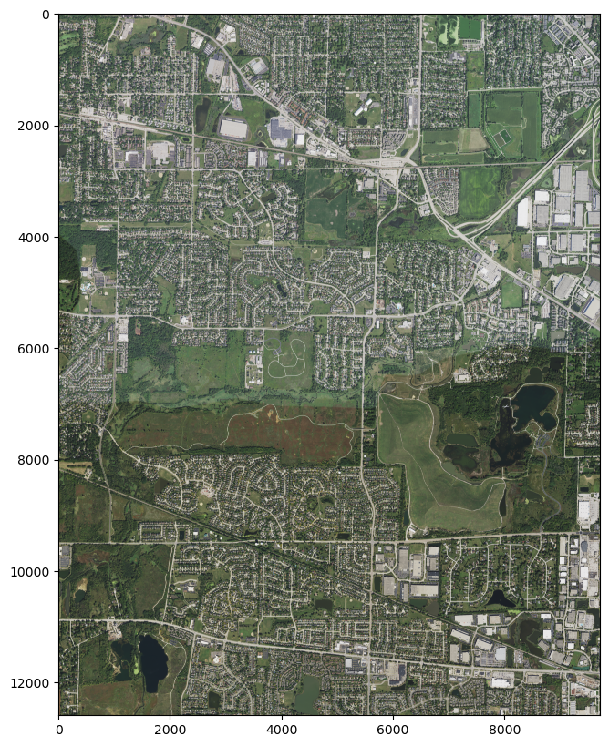
Ok, our calculations got us pretty close, although clearly we were a bit short in the x-direction.
Ding ding ding! That’s Montrose Beach! We’re in Chicago with {dst_x_off: 345232, dst_y_off: 111079}
Using our estimates to try to find the offsets for the northwest corner of Chicago
File m_4108703_ne_16_060_20210908.tif already downloaded. Skipping redownload.
File name: m_4108703_ne_16_060_20210908.tif
bounds: BoundingBox(left=442749.6, bottom=4642780.8, right=448539.6, top=4650304.2)
Shape of imagery array: (4, 12539, 9650)
Lat, Lon of the upper left corner: (42.002673723730645, -87.69130950207042)
Lat, Lon of the bottom right corner: (41.935316313647476, -87.62074015029482)
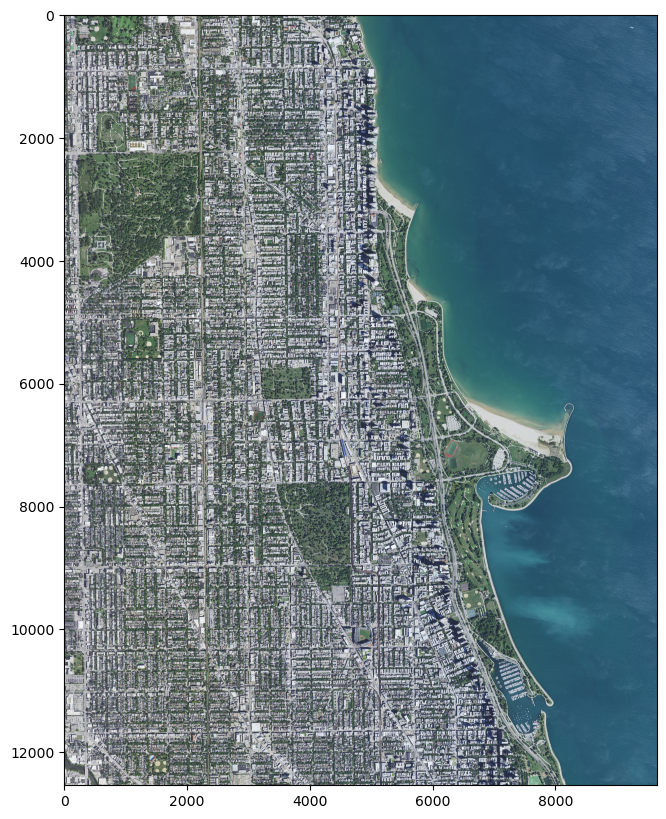
Oh rats, O’Hare is split in two. Well, O’Hare marks the western-most point in Chicago, and it’s nearly the northern-most point.
Adjusting offsets to get O’Hare International Airport, the northwest corner of Chicago
File m_4208757_se_16_060_20210908.tif already downloaded. Skipping redownload.
File name: m_4208757_se_16_060_20210908.tif
bounds: BoundingBox(left=422100.0, bottom=4649845.8, right=427906.2, top=4657495.2)
Shape of imagery array: (4, 12749, 9677)
Lat, Lon of the upper left corner: (42.06565922520393, -87.9415848800517)
Lat, Lon of the bottom right corner: (41.99732626080149, -87.8704724306422)
File m_4108701_ne_16_060_20210908.tif already downloaded. Skipping redownload.
File name: m_4108701_ne_16_060_20210908.tif
bounds: BoundingBox(left=422025.0, bottom=4642962.0, right=427834.8, top=4650500.4)
Shape of imagery array: (4, 12564, 9683)
Lat, Lon of the upper left corner: (42.002660830466866, -87.94156106696074)
Lat, Lon of the bottom right corner: (41.93532640993883, -87.87049010245049)
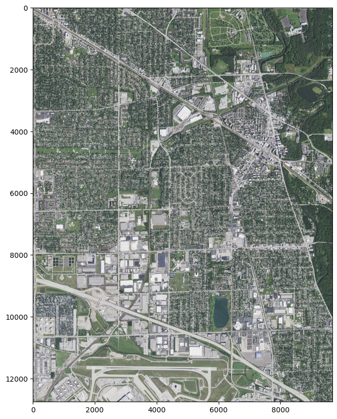
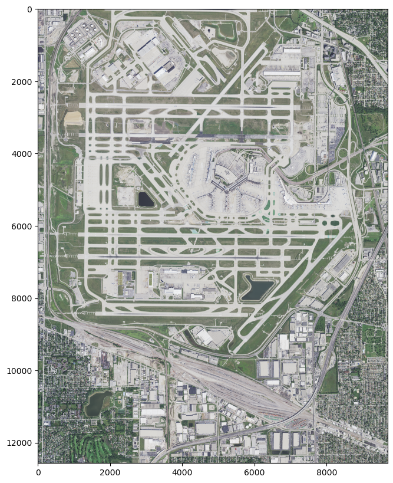
And there’s Lake Calumet (that oddly-shaped body of water near the top). While not exactly the southeastern corner of Chicago, it’s very close, so we know the extents of Chicago are roughly 310000 to 360000 in dst_x_off units, and 90000 to 170000 in dst_y_off units.
Adjusting offsets to get Lake Calumet, (very nearly) the southeast corner of Chicago
File m_4108720_sw_16_060_20210908.tif already downloaded. Skipping redownload.
File name: m_4108720_sw_16_060_20210908.tif
bounds: BoundingBox(left=447636.6, bottom=4607994.0, right=453530.39999999997, top=4615624.2)
Shape of imagery array: (4, 12717, 9823)
Lat, Lon of the upper left corner: (41.69067319541816, -87.62923384329923)
Lat, Lon of the bottom right corner: (41.62231527376006, -87.5578195678046)
File m_4108703_se_16_060_20210908.tif already downloaded. Skipping redownload.
File name: m_4108703_se_16_060_20210908.tif
bounds: BoundingBox(left=442693.8, bottom=4635786.0, right=448489.2, top=4643420.4)
Shape of imagery array: (4, 12724, 9659)
Lat, Lon of the upper left corner: (41.940673761594084, -87.69131260636372)
Lat, Lon of the bottom right corner: (41.87231581185974, -87.62073763881713)
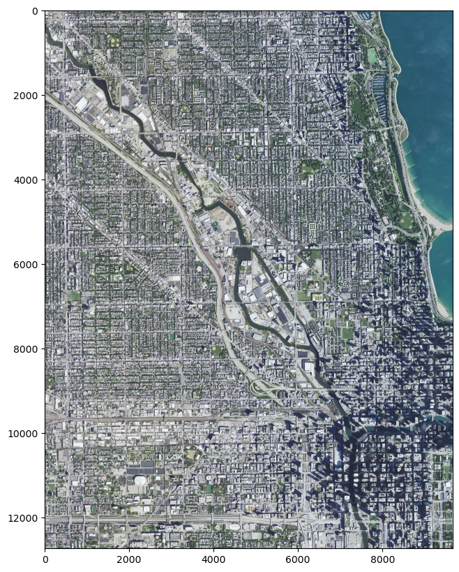
Downloading the images in the offsets bounded by the northwest and southeast corners
chicago_subset = filter_vrt_df_to_offset_spans( min_x=310000, max_x=360000, min_y=90000, max_y=170000, vrt_df=vrt_16_df)chicago_img_urls = [ url for url in il_2021_img_urls ifany(url.endswith(fn) for fn in chicago_subset["SourceFilename"])]print(f"Number of images in the Chicago dst_xy_offset bounds: {len(chicago_img_urls)}")download_img_file(img_urls=chicago_img_urls)
import geopandas as gpdgdf = gpd.read_file(f"zip://{zip_file_path}!tmp/tmpuejxrveu/tile_index_IL_NAIP_2021_9599.shp")print(f"Image tiles in all of Illinois: {len(gdf)}")display(gdf.head(3))
Image tiles in all of Illinois: 4131
filename
url
geometry
0
m_3608906_ne_16_060_20210622.tif
https://coastalimagery.blob.core.windows.net/d...
POLYGON ((-89.24674 36.93539, -89.31525 36.935...
1
m_3608907_ne_16_060_20210617.tif
https://coastalimagery.blob.core.windows.net/d...
POLYGON ((-89.12173 36.93538, -89.19025 36.935...
2
m_3608907_nw_16_060_20210617.tif
https://coastalimagery.blob.core.windows.net/d...
POLYGON ((-89.18374 36.93539, -89.25325 36.935...
Mapping out tile boundaries and coloring Chicago tiles
fig_width =20chicago_tiles_gdf = gdf.loc[ (gdf.geometry.centroid.x >=-88) & (gdf.geometry.centroid.x <=-87.50) & (gdf.geometry.centroid.y >=41.60) & (gdf.geometry.centroid.y <=42.05)].copy()print(f"Images corresponding to the Chicago blue area: {len(chicago_tiles_gdf)}")fig, ax = plt.subplots(figsize=(fig_width, fig_width))ax = gdf.plot(facecolor="none", linewidth=fig_width*0.01, ax=ax)ax = chicago_tiles_gdf.plot(facecolor="#B3DDF2", alpha=0.6, ax=ax)
Images corresponding to the Chicago blue area: 50
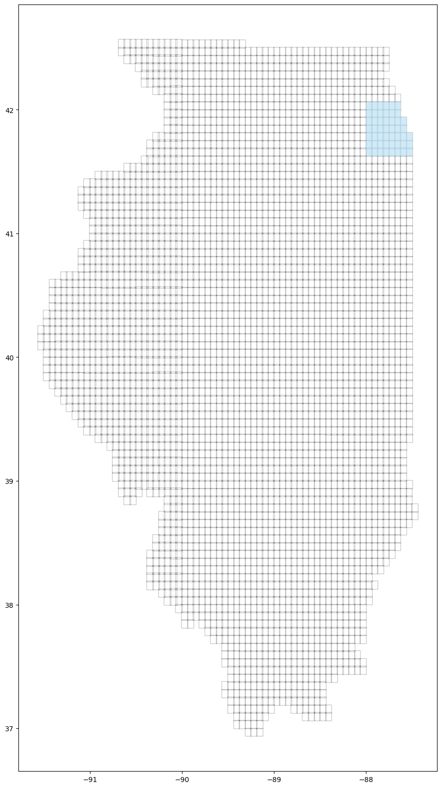
Oh man, that’s was much easier.
Answer 3: The zipped tile-index file seems to be primarily intended as an aid for finding images covering areas of interest
I’m really kicking myself for not checking the zip file first; the name really hinted at the purpose. But in addition to learning the hard way that NOAA provides helpful shapefiles that map out tiles, we’ve collected the images that cover Chicago, and learned a bit about the .vrt file type.
That’s enough for this post, but in the near future, I’ll see if I can segment these images with a model like SAM or FastSAM. Even if these images do prove to be too much to segment in a reasonable amount of time (with my hardware; a many-cored system with a 12GB VRAM CUDA-enabled GPU and 64 GB DRAM), it’s just a matter of time until even more performant implementations emerge.